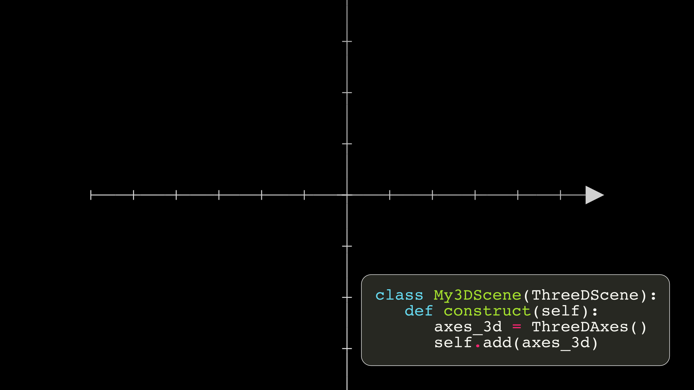
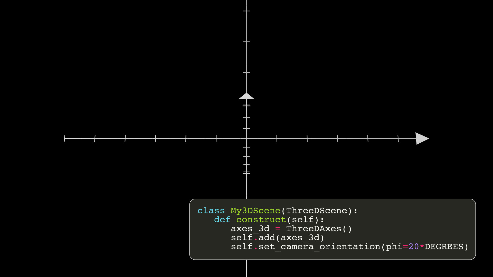
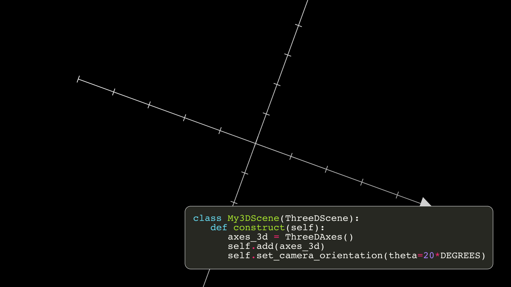
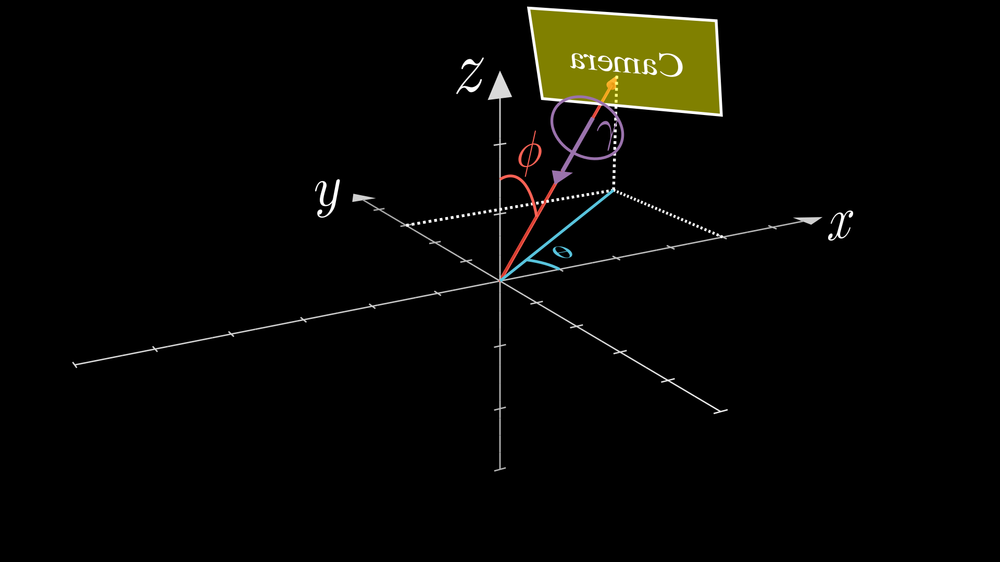
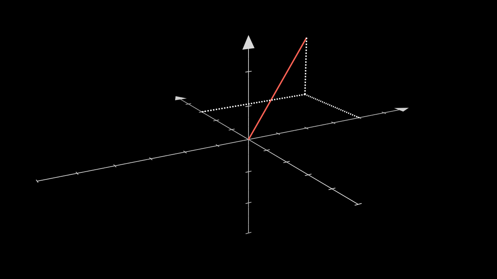

Basic 3D Graphs¶
Warning
If you are going to create very complex 3D animations, it is not recommended to use Manim, there are other much better tools, such as Blender. Use Manim when you really need it. In addition to the fact that a powerful computer is needed to be able to perform these scenes, if not, the rendering of the videos will be excessively slow. In later versions of Manim, the version with OpenGL will be available, which will allow us to use animations with the 3D camera much faster.
Setting camera¶
In order to graph 3D scenes we need to activate the 3D camera, this is very simple, we just have to build our scenes using ThreeDScene instead of Scene.
class My3DScene(ThreeDScene):
pass
If you do this and make any animation, you will not notice the difference, for this you have to move the camera. For this, we are going to use the 3D axes, and we are going to compare by changing the camera angles.
  From now on we are going to skip the first 4 lines:
class My3DScene(ThreeDScene):
def construct(self):
axes_3d = ThreeDAxes()
self.add(axes_3d)
Recapping, the angles are like this:
Moving camera¶
Note that by default theta=-90*DEGREES.
You can add animations when you perform the camera movement:
ThreeDAxes¶
If you are going to graph surfaces, the axes must have a unit_size=1, that is, each unit of the camera must be a unit of the graphs, this is because ThreeDAxes does not have a method to create surfaces, so the surfaces use the camera’s units of measure.
If you are only going to graph parametric curves or vectors you can use any unit_size, you only have to be careful in the Z axis, since Axes.c2p does not contemplate the Z coordinate:
def construct(self):
axes_3d = ThreeDAxes(
# unit_size=1 in Z axis
z_range=(-3,3,1),
z_length=6,
)
self.set_camera_orientation(phi=70*DEGREES,theta=240*DEGREES)
main_line = Line(ORIGIN,axes_3d.c2p(4,3)+2*OUT,color=RED)
vertical_line = DashedLine(axes_3d.c2p(4,0),axes_3d.c2p(4,3))
horizontal_line = DashedLine(axes_3d.c2p(0,3),axes_3d.c2p(4,3))
fall_line = DashedLine(axes_3d.c2p(4,3),axes_3d.c2p(4,3)+OUT*2)
Show result
Parametric functions¶
def construct(self):
axes_3d = ThreeDAxes()
func = axes_3d.get_parametric_curve(
lambda t: np.array([
2*np.cos(t),
3*np.sin(t),
t/3
]),
t_range=(-2*PI,2*PI,0.01),
color=RED
)
self.set_camera_orientation(phi=70*DEGREES,theta=240*DEGREES)
self.add(
axes_3d,
func
)
self.wait(0.5)
self.move_camera(theta=120*DEGREES,run_time=6,rate_func=linear)
self.wait(0.5)
self.move_camera(theta=90*DEGREES,phi=0,run_time=2,rate_func=smooth)
self.wait(0.5)
Show result
Surfaces¶
If you are going to graph Surfaces then it is necessary to normalize all unit_size on the axes to 1.
def construct(self):
axes_3d = ThreeDAxes(
x_range=(-6,6,1),
x_length=12,
y_range=(-5,5,1),
y_length=10,
z_range=(-3,3,1),
z_length=6,
)
self.set_camera_orientation(phi=70*DEGREES,theta=240*DEGREES)
surface = ParametricSurface(
lambda u, v: np.array([
np.cos(TAU * v),
np.sin(TAU * v),
2 * (1 - u)
]),
).fade(0.5)
paraboloid = ParametricSurface(
lambda u, v: np.array([
np.cos(v)*u,
np.sin(v)*u,
u**2
]),
v_range=(0,TAU),
).fade(0.5)
para_hyp = ParametricSurface(
lambda u, v: np.array([
u,
v,
u**2-v**2
]),
u_range=(-2,2),
v_range=(-2,2),
).fade(0.5)
cone = ParametricSurface(
lambda u, v: np.array([
u*np.cos(v),
u*np.sin(v),
u
]),
u_range=(-2,2),
v_range=(0,TAU),
)
sphere = ParametricSurface(
lambda u, v: np.array([
1.5*np.cos(u)*np.cos(v),
1.5*np.cos(u)*np.sin(v),
1.5*np.sin(u)
]),
#Resolution of the surfaces
u_range=(-PI/2,PI/2),
v_range=(0,TAU),
)
self.add(
axes_3d,surface
)
self.play(
Transform(surface, paraboloid)
)
self.wait(0.5)
self.play(
Transform(surface, para_hyp)
)
self.wait(0.5)
self.play(
Transform(surface, cone)
)
self.wait(0.5)
self.play(
Transform(surface, sphere)
)
self.wait(0.5)
Show result
Utilities¶
Fix Mobject to camera¶
Using ThreeDScene.add_fixed_in_frame_mobjects you make mobs always look at the screen fixed.
Arrow3D¶
def construct(self):
axes_3d = ThreeDAxes(
# unit_size=1 in Z axis
z_range=(-3,3,1),
z_length=6,
)
self.set_camera_orientation(phi=70*DEGREES,theta=240*DEGREES)
# Arrows3Ds are surfaces, so the more you add, the longer it will take to render.
main_line = Arrow3D(ORIGIN,axes_3d.c2p(4,3)+2*OUT,color=GREEN,height=0.7,base_radius=0.2)
vertical_line = Arrow3D(axes_3d.c2p(4,0),axes_3d.c2p(4,3))
horizontal_line = Arrow3D(axes_3d.c2p(0,3),axes_3d.c2p(4,3))
fall_line = Arrow3D(axes_3d.c2p(4,3),axes_3d.c2p(4,3)+OUT*2)
self.add(
axes_3d,
main_line,
vertical_line,
horizontal_line,
fall_line,
)
self.wait(0.5)
self.move_camera(theta=30*DEGREES,run_time=4)
self.wait()